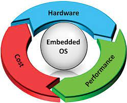

An embedded operating system (OS) is a specialized operating system designed to perform a specific task for a device that is not a computer. An embedded operating system’s main job is to run the code that allows the device to do its job. The embedded OS also makes the device’s hardware accessible to the software that is running on top of the OS.

Many modern electronic devices are based on Arduino or Raspberry PI. Raspberry PI devices often run an ARM-based Linux kernel, but there are actually a number of different operating systems that can be run on Raspberry PI devices. Arduino devices have a much more primitive embedded operating system that acts as little more than a boot loader and a command interpreter.